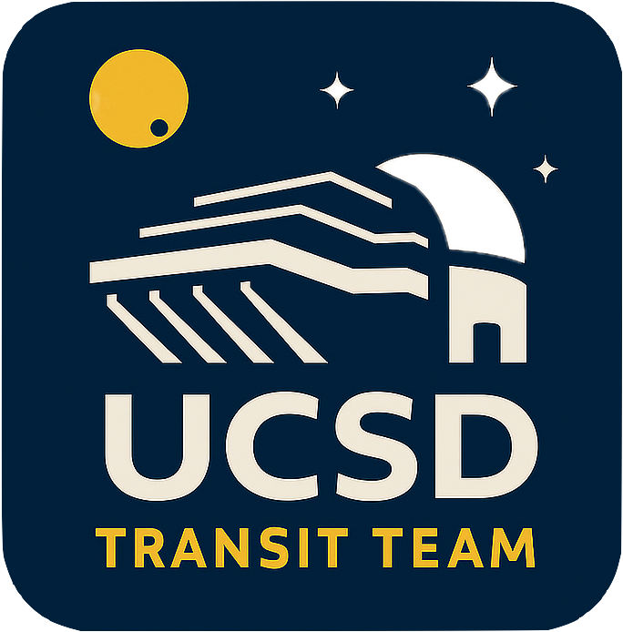

UCSD Exoplanet Transit Team
The UCSD Exoplanet Transit Team is an undergraduate astronomy research group in the Department of Astronomy and Astrophysics at the University of California, San Diego . The team conducts follow-up observations of transiting exoplanet candidates using facilities including Lick Observatory.
These observations help refine the orbital ephemerides of known exoplanets and improve predictions of when future transits will occur. The team also monitors low-mass stars over long periods to measure stellar rotation periods that are longer than the observing baselines available from TESS.

About the UCSD Exoplanet Transit Team
UCSD Exoplanet Transit Team members participate in planning astronomical observations, operating telescopes, reducing imaging data, measuring exoplanet transit times, and analyzing long-term stellar variability. The program provides students with hands-on research experience in observational astronomy, exoplanet science, and stellar astrophysics.
Students work collaboratively with undergraduate researchers, graduate students, and faculty while gaining experience with scientific computing, telescope operations, photometric data analysis, and the interpretation of astronomical time-series data.
Team Roster
The UCSD Exoplanet Transit Team includes undergraduate researchers, student mentors, and faculty working together on observing and data-analysis projects.
| Name | Role | Responsibilities |
|---|---|---|
| Loading roster… | ||
Observing Schedule
The schedule below shows the three observing nights closest to today, including both recent and upcoming observations.
For future nights, weather forecasts from the National Weather Service are automatically integrated when available, typically approximately seven to ten days in advance. For past nights, the observing status is displayed.
Current Mt. Hamilton Conditions
Resources
Internal observing guides, schedules, data-analysis materials, and other resources for UCSD Exoplanet Transit Team members are stored in a shared Google Drive folder.
Open Team Resources